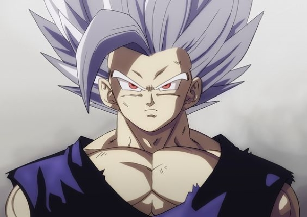

O sayajin mais forte?
Em recente entrevista, Akira Toriyama, o criador de Dragon Ball, confirmou o que alguns já suspeitavam: Gohan é realmente mais forte que Goku. O mangaká também aproveitou pra dizer a atual situação do personagem e explicou o possível motivo para que alguns não considerem o personagem tão forte assim. "Gohan é realmente mais forte do que qualquer um... Ou pelo menos é isso que se diz, mas ultimamente ele não tem realmente tido a chance de brilhar", disse Toriyama. "Para motivar Gohan, é preciso o respeitado professor Piccolo em vez do pai Goku. Pensei em tentar dar origem a um novo super-herói e colocar estes dois sob o holofote por meio das intensas batalhas contra os androides Gamma".
Vale lembrar que, anteriormente, Yudai Okuyama, biólogo e fã de Dragon Ball, utilizou sua opinião de especialista para confirmar que, se fosse na realidade, Gohan realmente seria mais forte que Goku. A explicação é que a força do personagem é resultante da heterose, termo usado para descrever quando um sucessor de origem híbrida se beneficia das vantagens biológicas de ambos os seus progenitores, e acaba se tornando mais forte que ele.
No site oficial do novo filme da franquia, Dragon Ball Super: Super Hero, uma breve descrição dos personagens também confirmou que Gohan é mais forte que Goku e Vegeta. A biografia de Gohan diz: "O filho mais velho de Goku. Embora esconda um potencial que ultrapassa Goku e Vegeta, ele não gosta de brigas e vive uma vida pacífica como acadêmico."